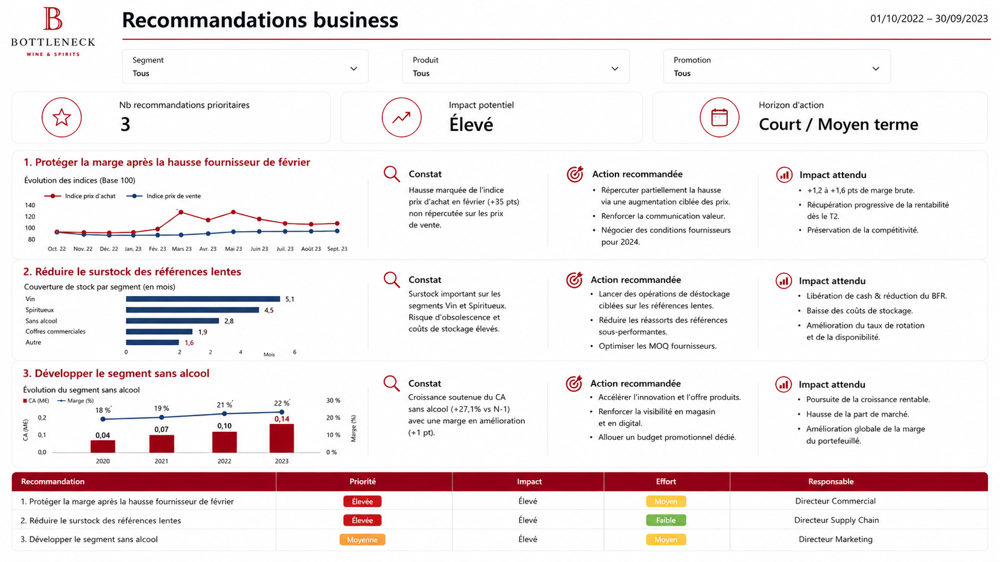

Lire immédiatement CA, marge, rotation et évolution de la période.Read revenue, margin, turnover and period evolution immediately.
Projet 02 · Étude de cas complèteProject 02 · Full case study
Piloter ventes, marge et stock sur un même écran.Steer sales, margin and inventory on one screen.
J’ai conçu un tableau de bord Power BI qui relie les indicateurs de direction à leurs causes produit, puis transforme la lecture en trois priorités d’action.I designed a Power BI dashboard that links executive indicators to product-level drivers, then turns the analysis into three action priorities.
- RôleRole
- Conception BI complèteEnd-to-end BI design
- PériodePeriod
- 10/2022–09/2023
- SourcesSources
- SQL · CSV
- LivrableDeliverable
- Rapport à 2 pages2-page report
01 · Contexte01 · Context
Une direction qui doit voir le résultat et ses causes.Management needs both the outcome and its drivers.
Les données de ventes, de finance, de promotion et de catalogue étaient disponibles, mais pas encore réunies dans un dispositif de pilotage cohérent. L’enjeu consistait à suivre la performance globale tout en permettant une descente rapide vers les produits responsables d’un écart.Sales, finance, promotion and catalog data were available but not yet combined into a coherent management tool. The challenge was to track overall performance while enabling a fast drill-down to the products behind a variance.
2,41 M€CA HTrevenue excl. tax
45,9 %taux de margemargin rate
4,2×rotation du stockinventory turnover
5KPI directeursexecutive KPIs
02 · Défi02 · Challenge
Faire partager les mêmes définitions à chaque visuel.Make every visual share the same definitions.
Un tableau de bord peut être visuellement convaincant tout en donnant des réponses contradictoires si les dates, taxes, promotions ou relations du modèle ne sont pas maîtrisées. J’ai donc traité le modèle et les mesures avant la mise en page.A dashboard can look convincing while returning contradictory answers if dates, taxes, promotions or model relationships are not controlled. I therefore addressed the model and measures before layout.
- Aligner chiffre d’affaires, marge, coûts, promotions et stock sur la même période.Align revenue, margin, costs, promotions and inventory to the same period.
- Éviter les doubles agrégations entre tables de faits et dimensions.Avoid double aggregation across fact and dimension tables.
- Rendre les filtres compréhensibles pour un lecteur non technique.Make filters understandable to a non-technical reader.
Principe UXUX principle
La première page répond « que se passe-t-il ? » ; la seconde répond « où agir ? », avec les mêmes filtres et définitions.The first page answers “what is happening?”; the second answers “where should we act?”, using the same filters and definitions.
03 · Démarche03 · Approach
De la donnée brute à une lecture guidée.From raw data to a guided reading.
- Préparer dans Power QueryPrepare in Power QueryTypage, renommage, contrôles de valeurs et harmonisation des clés.Typing, renaming, value checks and key harmonization.
- Construire le modèle relationnelBuild the relational modelRelations explicites entre ventes, finance, produits, Web et promotions.Explicit relationships across sales, finance, products, Web and promotions.
- Définir les mesures DAXDefine DAX measuresCA, marge, taux de marge, rotation et couverture calculés une seule fois.Revenue, margin, margin rate, turnover and coverage calculated once.
- Hiérarchiser l’informationPrioritize informationKPI en tête, tendances et causes au centre, détails produit à la demande.KPIs first, trends and drivers in the center, product details on demand.
- Relier analyse et actionConnect analysis and actionLes constats sont reformulés en décisions priorisées et vérifiables.Findings are reframed as prioritized, verifiable decisions.
04 · Résultats04 · Outcomes
Deux pages, trois niveaux de décision.Two pages, three decision levels.
Comparer catégories, promotions et niveaux de stock avec des filtres communs.Compare categories, promotions and inventory levels with shared filters.
Repérer les références à contrôler avant une décision de prix ou de stock.Identify products to review before a pricing or inventory decision.
Trois graphiques structurent trois actions plutôt qu’une accumulation de constats.Three charts structure three actions instead of accumulating findings.
05 · Preuves05 · Evidence
La synthèse et le passage à l’action.The overview and the path to action.


06 · Limites et suite06 · Limits and next steps
Un bon rapport n’est pas encore un système BI industrialisé.A strong report is not yet an industrialized BI system.
- Le rafraîchissement reste à automatiser et à surveiller.Refresh still needs automation and monitoring.
- La sécurité par rôle doit être définie avant diffusion à plusieurs métiers.Role-level security must be defined before distribution across teams.
- Les KPI dépendent des conventions de source, de période et de fiscalité documentées.KPIs depend on documented source, period and tax conventions.
- Les recommandations sont descriptives : une validation métier précède toute action.Recommendations are descriptive; business validation precedes action.
Modélisation, contexte de filtre, mesures et interactions.Modeling, filter context, measures and interactions.
Hiérarchie visuelle, lecture progressive et recommandations.Visual hierarchy, progressive reading and recommendations.